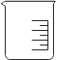
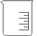

Determination of Chemical Oxygen Demand
Objective:
To determine the Chemical Oxygen Demand of given water sample.
Apparatus used:
COD digester, Round bottom reflux flask, Digestion vessels, Conical flask, Burette, Pipette etc.
Solutions usedMercury sulfate (HgSO4) solution, Potassium dichromate (K2Cr2O7) solution, Silver sulfate-sulfuric acid solution, Ferrous Ammonium Sulfate (FAS) solution, Distilled water, Water sample DescriptionChemical Oxygen Demand (COD) is defined as the amount of specified oxidant that reacts with the sample under controlled condition.


Preparation of Blank Solution
Take 10ml of distilled water in a round bottom reflux flask.


Press the up arrow on the bulb to take 10ml of distilled water up into the pipette
Press the down arrow on the bulb to release distilled waterinto the flask
Add 1ml of Mercury Sulfate (HgSO4) solution into the same flask.
Press the up arrow on the bulb to take 1ml of Mercury Sulfate solution up into the pipette
Press the down arrow on the bulb to release Mercury Sulfate solution into the flask
Add 5ml of Potassium Dichromate (K2Cr2O7) solution into the same the flask.
Press the up arrow on the bulb to take 5ml of Potassium Dichromate solution up into the pipette
Press the down arrow on the bulb to release Potassium Dichromate solution into the flask
Now add 15ml of Silver Sulfate-Sulfuric Acid solution into the flask.
Press the up arrow on the bulb to take 10ml of Sulfuric Acid up into the pipette
Press the down arrow on the bulb to release Sulfuric Acidinto the flask
Transfer the content in the flask to the digestion vessel. Then place the digestion vessel in the COD digester at 150° celsius for 2 hours.


Keep digestion vessel in the COD digester.
After 2 hours
Titration of Blank Solution
Transfer the contents in the digestion vessel to conical flask. Then add 2-4 drops of Ferroin indicator to the flask.


Take 0.025M Ferrous Ammonium Sulfate solution in the burette.


 

Titrate the blank solution till the colour change from blue to colorless.


Open the knob to start the liquid running into the conical flask
Close the knob when the colour of solution in conical flask changes to colourless
Initial burette reading = 0 ml
Final burette reading = _______ ml
Titration of Water Sample
Take 0.025M Ferrous Ammonium Sulfate solution in the burette.
Titrate the sample solution till the colour change from blue to colorless.
Open the knob to start the liquid running into the conical flask
Close the knob when the colour of solution in conical flask changes to colourless
Initial burette reading = 0 ml
Final burette reading = _______ ml
Preparation of sample solution- Take 10ml of sample in a round bottom reflex flask
- Add 1ml of Mercury Sulfate solution to the flask
- Add 5ml of Potassium Dichromate solution
- Add 15ml Silver Sulfate-Sulfuric Acid solution
- Transfer the content in the flask to digestion vessel
- Then place the digestion vessel in the COD digester
- After 2 hours take out the digestion vessel from COD digester and allow it to cool for few minutes
- Transfer the contents in the digestion vessel to conical flask. Then add 2-4 drops of Ferroin indicator to the flask
Observations:
| Burette Reading (ml) | Volume of FAS solution (Final Value - Initial Value) (ml) | ||
| Initial | Final | ||
| Blank | 0 | ||
| Water Sample | 0 | ||
✔
Formula:
COD = (A-B) x molarity x 8000⁄Volume of sample
Where A = FAS consumed by blank
Where B = FAS consumed by sample
Volume of sample = 200ml, Molarity = 0.025M
What is the acceptable range of COD in drinking water?
<250mg/l 250mg/l to 500mg/l 500mg/l to 750mg/l >750mg/l